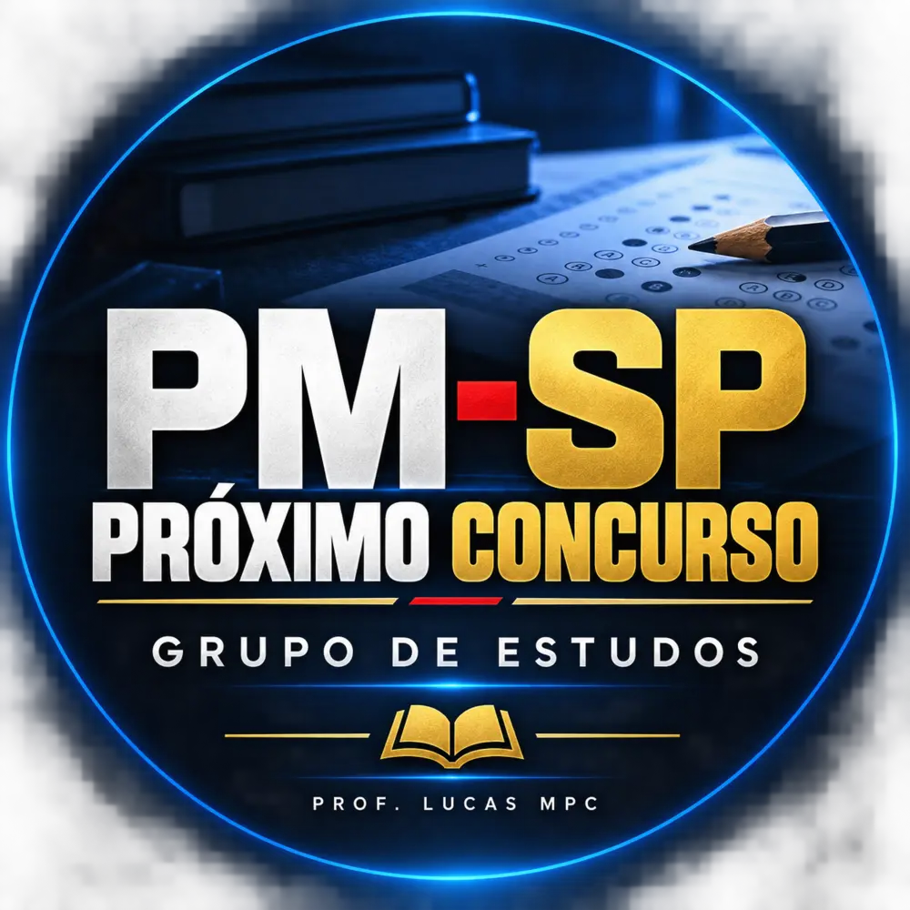

Quer corrigir os erros, melhorar a preparação e tentar novamente.
GRUPO DE ESTUDOS · PRÓXIMO CONCURSO PM-SP
Comece antes do edital. Chegue mais preparado.
Um grupo gratuito e organizado para quem deseja estudar com antecedência para o próximo concurso de Soldado PM-SP.
Grupo gratuitoSomente administradores publicamConteúdo independente

Para quem é
Não importa de onde você está começando
O grupo foi pensado para candidatos em momentos diferentes, mas com o mesmo objetivo: chegar mais fortes ao próximo concurso.
Precisa entender como começar e construir uma base antes do edital.
Quer mais tempo para estudar, revisar e resolver questões da Vunesp.
Precisa fortalecer raciocínio, interpretação e resolução de questões.
Quer transformar a rotina disponível em um plano possível de cumprir.
Prefere saber o que fazer em vez de acumular materiais sem estratégia.

Quem vai orientar você
Professor e mentor de estudos para concursos
Sou o Prof. Lucas MPC. Acompanhei de perto a prova de Soldado PM-SP 2026, a correção das questões e as dificuldades relatadas pelos candidatos.
Criei este grupo para ajudar quem decidiu não esperar o próximo edital. A proposta é oferecer direção, treino e orientação prática para você construir uma preparação mais consistente.
Prof. Lucas MPC
Como vai funcionar
Uma preparação mais completa para o próximo concurso
O grupo não será voltado apenas para Matemática. A proposta é ajudar você a estudar com direção, melhorar seu desempenho e se preparar para as diferentes matérias e desafios da prova.
Orientações práticas para estudar melhor, manter a constância e aproveitar o tempo disponível.
Gestão do tempo, resolução de questões, revisões e decisões importantes para o dia da prova.
Exemplos e orientações para distribuir matérias, exercícios, revisões e simulados na rotina.
Técnicas para aprender, revisar, memorizar e transformar conteúdo em acertos.
Dicas, interpretação, métodos de resolução e treino no estilo da banca.
Simulados, interpretação de textos, gramática e questões para acompanhar sua evolução.
Orientações sobre estrutura, argumentação, desenvolvimento do tema e erros que devem ser evitados.
Administração Pública, Informática, Atualidades e outros conteúdos relevantes para a preparação.
Novos materiais, desafios, avisos, aulas e orientações serão acrescentados conforme as necessidades do grupo.
Comece com clareza
Seus quatro primeiros passos
Reveja sua experiência
Identifique o que dificultou sua preparação ou seu desempenho.
Mapeie suas dificuldades
Descubra quais matérias e hábitos precisam de mais atenção.
Organize uma rotina possível
Comece com um plano que caiba na vida real e possa ser mantido.
Treine com questões
Use a prática para aprender a linguagem e as cobranças da Vunesp.
Entrada no grupo
Conte um pouco sobre sua preparação
Preencha o questionário e envie as respostas diretamente para o WhatsApp do Prof. Lucas MPC. Depois de receber sua mensagem, ele enviará o link de entrada no grupo.
Grupo organizado: somente os administradores publicam. Assim, você acompanha os conteúdos sem excesso de mensagens.
Apoio para sua preparação
Materiais para transformar estudo em prática
Se quiser avançar além dos conteúdos gratuitos do grupo, conheça algumas opções do Prof. Lucas MPC.
Mentoria para Concursos
Direção, estratégia e acompanhamento do Prof. Lucas MPC para organizar sua preparação e avançar com clareza.
Conhecer a Mentoria → Academia da MatemáticaPreparação completa com aulas, questões comentadas, simulados, macetes e correções em vídeo.
Conhecer a Academia → Português Completo para ConcursosGramática, interpretação de textos, sintaxe, ortografia e resolução de questões com o Prof. Mazziotti.
Conhecer o curso de Português →A entrada no grupo de estudos é gratuita e não exige a compra de nenhum material.
Seu próximo passo
Não espere o próximo edital para começar
Use o tempo a seu favor. Entre no grupo, identifique o que precisa melhorar e comece uma preparação mais organizada para o próximo concurso.
Aviso importante: este é um projeto educacional independente do Prof. Lucas MPC. A página e o grupo não representam a Polícia Militar do Estado de São Paulo nem a Fundação Vunesp. Informações sobre edital, datas e regras somente serão tratadas como oficiais quando publicadas pelos órgãos responsáveis.